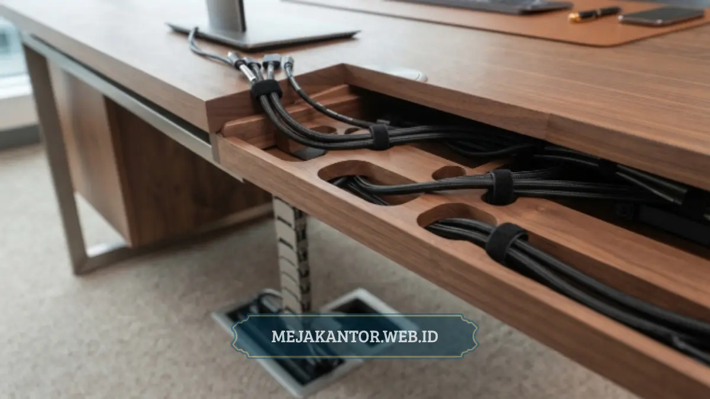

Meja direktur MDE-02 adalah meja kerja kelas pimpinan yang mengutamakan material tahan lama dan fitur manajemen kabel tersembunyi, sehingga tampilan ruang kerja direktur tetap rapi, elegan, dan profesional.
- MDE-02 dirancang khusus untuk ruang kerja direktur atau pimpinan perusahaan.
- Material utama menggunakan kombinasi papan olahan berkualitas dengan lapisan finishing tahan gores.
- Fitur manajemen kabel tersembunyi menjadi salah satu daya tarik utama meja ini.
- Desainnya cenderung minimalis-elegan sehingga cocok untuk berbagai gaya interior kantor.
- Perawatan meja ini tergolong mudah karena permukaannya tahan terhadap noda ringan.
Daftar Isi Artikel
- Apa Itu Meja Direktur MDE-02?
- Spesifikasi dan Desain Meja Direktur MDE-02
- Material Apa yang Digunakan pada Meja Direktur MDE-02?
- Fitur Manajemen Kabel pada Meja Direktur MDE-02
- Kelebihan dan Kekurangan Meja Direktur MDE-02
- Untuk Siapa Meja Direktur MDE-02 Cocok Digunakan?
- Cara Merawat Meja Direktur MDE-02 agar Tetap Awet
Apa Itu Meja Direktur MDE-02?
Meja direktur MDE-02 adalah salah satu tipe meja kerja kelas pimpinan yang dirancang dengan fokus pada kombinasi estetika, fungsi kerja, dan kerapian instalasi kabel elektronik di meja.
Kode "MDE" pada penamaannya umumnya merujuk pada kategori meja direktur eksekutif dalam katalog furnitur kantor. Meja ini biasanya diposisikan sebagai meja kerja utama di ruang direktur, ruang manajer senior, atau ruang pimpinan cabang, di mana kesan profesional dan kerapian ruang kerja menjadi pertimbangan penting selain fungsi kerja sehari-hari.
Spesifikasi dan Desain Meja Direktur MDE-02
Secara desain, meja direktur MDE-02 umumnya mengusung gaya minimalis modern dengan garis-garis tegas dan permukaan meja yang luas, sehingga cukup untuk menampung perangkat kerja seperti laptop, dokumen, dan aksesori meja lainnya.
Ukuran meja jenis direktur seperti ini biasanya lebih besar dibanding meja staf pada umumnya, mengingat fungsinya juga sering dipakai untuk menerima tamu atau melakukan pertemuan singkat langsung di ruang kerja pimpinan.
Kaki meja pada tipe direktur seperti MDE-02 umumnya dirancang kokoh dengan struktur penopang tambahan di bagian tengah, sehingga meja tetap stabil meskipun menahan beban perangkat kerja dalam jumlah cukup banyak.
Material Apa yang Digunakan pada Meja Direktur MDE-02?
Meja direktur MDE-02 umumnya menggunakan material dasar papan olahan berkualitas seperti particle board atau MDF dengan lapisan finishing HPL atau melamin yang tahan terhadap goresan ringan dan kelembapan permukaan.
Lapisan finishing ini berfungsi tidak hanya untuk menambah nilai estetika, tetapi juga melindungi struktur dasar meja dari paparan cairan, debu, dan gesekan harian sehingga daya tahan meja dapat terjaga dalam pemakaian jangka panjang.
Pemilihan warna finishing pada meja direktur kelas ini umumnya berkisar pada warna-warna netral seperti coklat kayu, hitam doff, atau abu-abu gelap, yang dipilih karena kesan profesional dan mudah dipadukan dengan elemen interior ruang direktur lainnya.

Fitur Manajemen Kabel pada Meja Direktur MDE-02
Fitur manajemen kabel pada meja direktur MDE-02 dirancang untuk menyembunyikan kabel listrik, kabel data, dan colokan tambahan agar tidak terlihat berantakan di permukaan maupun kolong meja kerja.
Umumnya, fitur ini terdiri dari jalur kabel (cable tray) yang dipasang di bagian bawah meja, lubang kabel (grommet hole) pada permukaan meja untuk jalur kabel vertikal, serta ruang tambahan untuk menempatkan stop kontak atau terminal listrik secara tersembunyi.
Dengan sistem manajemen kabel seperti ini, pengguna dapat menghubungkan berbagai perangkat elektronik seperti komputer, monitor tambahan, printer, atau lampu meja tanpa membuat tampilan meja terlihat semrawut oleh kabel yang berserakan.
Fitur ini juga memberikan manfaat dari sisi keselamatan kerja, karena kabel yang tertata rapi mengurangi risiko tersandung atau terjepit saat pengguna beraktivitas di sekitar meja.
Kelebihan dan Kekurangan Meja Direktur MDE-02
Kelebihan utama meja direktur MDE-02 terletak pada kombinasi desain elegan dan fitur manajemen kabel yang membuat ruang kerja direktur terlihat lebih profesional, sementara kekurangannya umumnya berkaitan dengan bobot meja yang cukup berat saat proses pemindahan.
Dari sisi kelebihan, meja ini menawarkan tampilan yang representatif untuk menerima tamu bisnis, permukaan kerja yang luas, serta sistem kabel tersembunyi yang jarang ditemukan pada meja staf reguler.
Sementara itu, salah satu kekurangan yang perlu dipertimbangkan adalah ukuran dan bobot meja yang relatif besar sehingga membutuhkan ruang penempatan yang cukup lega dan proses instalasi awal yang sedikit lebih rumit dibanding meja kerja standar.
Untuk Siapa Meja Direktur MDE-02 Cocok Digunakan?
Meja direktur MDE-02 paling cocok digunakan oleh direktur, pimpinan perusahaan, atau manajer senior yang membutuhkan meja kerja representatif sekaligus fungsional untuk menerima tamu dan menyimpan banyak perangkat kerja.
Selain untuk ruang direktur utama, meja jenis ini juga sering dipertimbangkan untuk ruang kepala cabang, ruang komisaris, atau ruang rapat kecil yang bersifat lebih personal, di mana kesan profesional ruang kerja turut memengaruhi citra perusahaan di mata klien atau mitra bisnis.
Bagi perusahaan yang sedang membangun atau merenovasi ruang kerja pimpinan, meja direktur MDE-02 dapat menjadi salah satu opsi yang dipertimbangkan bersama beberapa tipe meja direktur lain, disesuaikan dengan luas ruangan dan gaya interior yang diusung.
Cara Merawat Meja Direktur MDE-02 agar Tetap Awet
Meja direktur MDE-02 dapat dirawat dengan cara membersihkan permukaan secara rutin menggunakan kain lembut kering, menghindari paparan cairan berlebih, dan tidak meletakkan benda panas langsung di atas permukaan meja.
Untuk membersihkan noda ringan, disarankan menggunakan kain lembab dengan sedikit sabun cair non-abrasif, kemudian segera dikeringkan agar kelembapan tidak meresap ke lapisan finishing dalam waktu lama.
Selain itu, sebaiknya hindari menyeret benda berat langsung di atas permukaan meja karena berpotensi meninggalkan goresan pada lapisan finishing, meskipun material meja direktur kelas ini umumnya sudah dirancang cukup tahan gores.
Perawatan berkala pada bagian kaki dan sambungan meja juga dianjurkan, terutama untuk memastikan struktur penopang tetap kokoh mengingat meja direktur biasanya menahan beban penggunaan yang cukup intensif setiap harinya.
Meja direktur MDE-02 menjadi pilihan yang relevan bagi perusahaan yang mengutamakan kombinasi desain profesional dan kerapian instalasi kabel di ruang kerja pimpinan. Material finishing yang tahan gores, permukaan kerja yang luas, serta fitur manajemen kabel tersembunyi menjadi tiga aspek utama yang membedakannya dari meja staf pada umumnya. Sebelum memutuskan pembelian, pastikan ukuran meja sesuai dengan luas ruang direktur yang tersedia dan sesuaikan pilihan warna finishing dengan gaya interior kantor secara keseluruhan.
Untuk melihat inspirasi penataan ruang kerja lainnya, simak panduan 5 jenis partisi workstation sekat meja kantor dan ulasan meja rapat kantor berlapis HPL anti gores.
Pesan Meja Direktur MDE-02 Sekarang
Dapatkan penawaran harga spesial pengadaan corporate B2B lengkap dengan garansi pabrik dan instalasi profesional.
Hubungi Sales Executive 0889-8964-3555
Mega Anggun
Penulis Konten & Spesialis Penataan Interior Kantor. Berpengalaman dalam memberikan tips ergonomi dan memilih furnitur terbaik untuk menunjang produktivitas kerja.